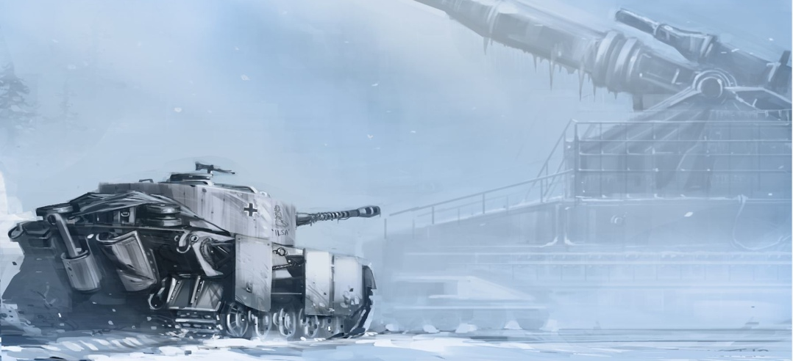

cc 2001 - 2010 Benjamin Birkenhake Digital ist besser
Als ich neulich ein bischen was über die "verlorene" Neunte Legion rausfinden wollte, bin ich über Mortis Rex gestolpert. Peter Briggs – der Drehbuchautor von ersten Hellboy-Film – will einen lovecraftesquen Horror-Film machen, der zur Zeit der Römer spielt. Da war ich sofort angetan. Die Webseite zum Film gibt zwar noch nicht viel her, aber viel ist da für mich auch eigentlich schon nicht mehr nötig. Ich bin sofort begeistert. Dass der Produzent von "Die Mumie" auch noch an Bord läßt die Vorfreude nur umso größer werden. Bärenstark!
Und wo ich schon bei Bloody Disgusting war, ist mir dann auch noch "Panzer 88" in die Hände gefallen. Ebenfalls von Peter Briggs, geht es diesmal um die Besatzung eines deutschen Tiger-Panzers im Winter 44. Zwischen ihnen und er Heimat steht allerdings ein fieses Monster. Nach Dead Snow fällt es mir wahrlich nicht schwer, mich für Nazi-Gruseleien zu begeistern. Herrlich. Da kommen einige schöne Filme auf uns zu.

By the way: Ich sollte dringend mal anfangen Lovecraft zu lesen. Allerdings scheint mir sein Œuvre nicht gerade einfach strukturiert zu sein. Es hat nicht zufällig jemand ein paar Tips wie man sich dem als Leser am besten nähert?
Kommentare
von Dirk #
»Panzer 88« klingt wie eine Nazi-Bekleidungsmarke ;)
Lovecraft: ich glaube, man kann einfach irgendwo anfangen. Die Erzählungen sind ja nicht miteinander verwoben. Die Taschenbücher »Cthulhu« und »Das Ding auf der Schwelle« z. B. enthalten längere Geschichten. (Die darin enthaltene Geschichte »Pickmans Modell« gibt es übrigens auch als von Dirk von Lowtzow gelesenes Hörbuch.)
von ben_ #
Oh! Richtig. Ich hatte schon die ganze Zeit überlegt, warum mit "Panzer 88" so merkwürdig bekannt vorkam. Ob die Jungs das wohl wissen?
Und Danke für den Hörbuchhinweis. Das werde ich mal direkt irgendwo ergattern.
von ben_ #
Ah. Schau an! Hat schon wer rausgefunden.